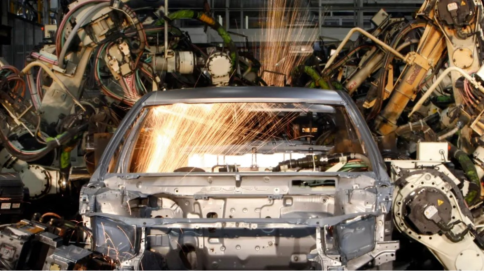
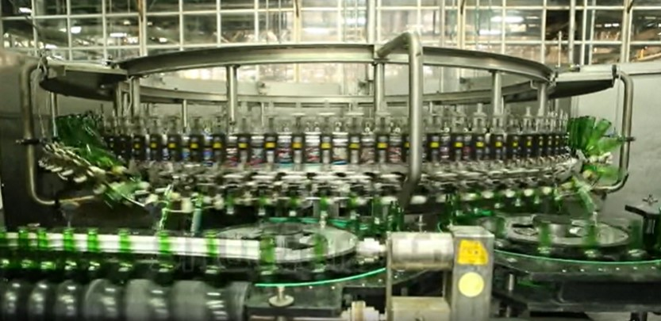
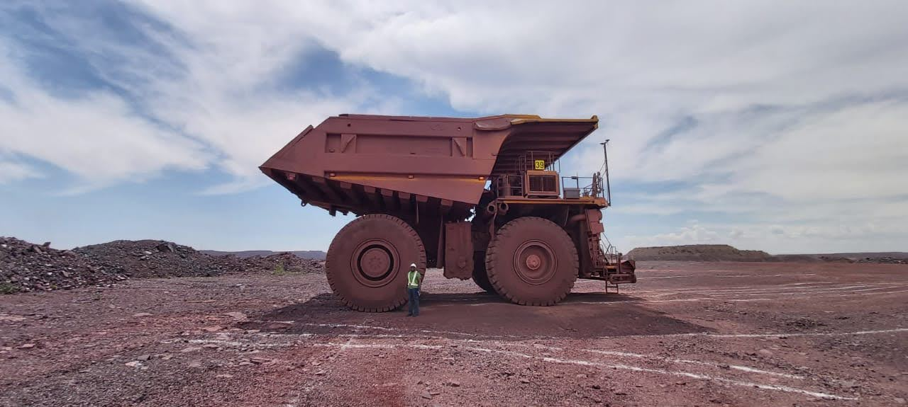

Toyota Motors South Africa
I am an electrical engineer (light current) specializing in process instrumentation and control. I have amassed a wide breadth of experience in many different industries.
My engineering career began in the automotive field in Toyota Motors South Africa, working through various positions, starting from an engineering trainee to technical specialist dealing with six-axis robots used for vehicle manufacture. At this point Industry 4.0 was far from inception, but I was able to learn the fundamental building blocks, such as programmable logic controllers and SCADA (Secondary control and data acquisition) systems. Later advancements in this systems, along with the advent of IoT would start becoming the norm.
Systems Anywhere

I later joined Systems Anywhere as a software engineer. This afforded me the opportunity to work in a design environment with my peers at the organisation. The company specialized in the design of turnkey metallurgical processing plants for the gold mining industry. In the time I became proficient in programmable logic controller programming, and SCADA systems design, even passing my certification as a systems integrator on Wonderware SCADA platforms. Systems anywhere also had a proprietary fuzzy logic control algorithm for the control of ball and sag mills where gold rich ore is ground to the consistency of approximately 45µm, before further processing in a carbon in leach circuit.
South African Breweries

On leaving the mining industry, I joined the South African breweries, based in the Alrode plant, the largest brewery in Africa, and the largest in the southern hemisphere, capable of producing 11 million hectoliters of beer per year. The love for the products kept me at the brewery for 8 brilliant years, where I had the opportunity to define topologies and technologies for the systems used in the high-speed packaging plant and manage the many skilled technical staff that made the brewery prosperous. I eventually grew to become the Manufacturing systems manager for Alrode Brewery.
Modular mining systems

I am currently employed as the Technical Services Manager, Africa for Modular mining systems, headquartered in Tucson Arizona, a subsidiary of Komatsu mining technology services. We specialize in fleet management, high accuracy GPS based position systems for mining equipment, and remote health monitoring services. I am pictured above standing next to a Komatsu 960E haul truck, with a payload capacity of 360 tons. This particular unit was being tested after we had installed a semi-autonomously guidance system onboard.
I have also worked on many systems which are also first to market, such as remote health monitoring of machines, which works as IoT does, but on a global scale. These units report data to Azure clouds and are centrally monitored with predictive algorithms that monitor and process in Ai based prediction models for engine and ancillary systems health, thereby maximizing maintenance efficiency, and saving money by alerting for upcoming catastrophic failure before it occurs.
Future career in Artificial Intelligence
With advancements in technology, I have been part of the revolution of Industry 4.0, specifying many systems used to interconnect machines across the plant floor in Alrode, to sensors in wide vast geographical regions and terrain, such as tailings dams in the gold manufacturing industry. We are capable of producing excesses of data, but much scope existing for understanding the future implications of this data. Such as improved prediction, control, or finding common patterns in data which can assist in streamlining control. I am exciting in this chapter of my studies and look forward to using the knowledge gained in the MSc: Artificial Intelligence course.